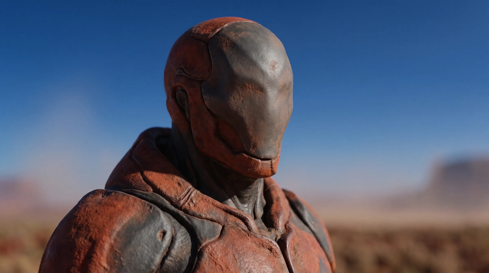
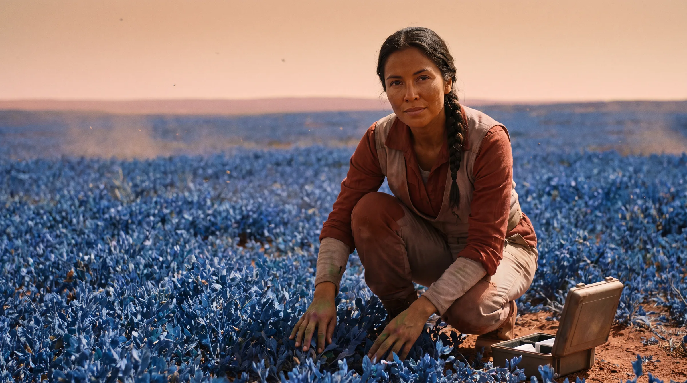
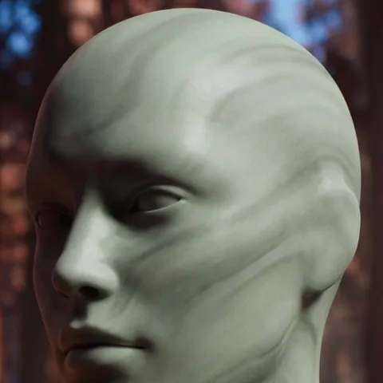
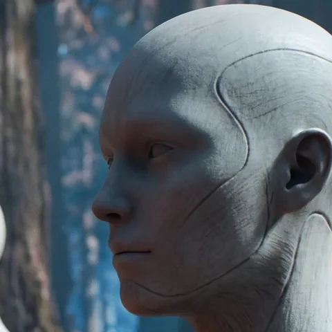
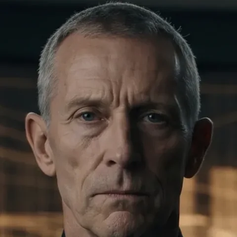
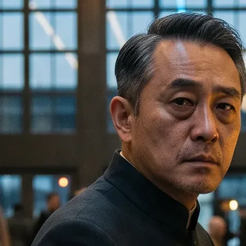
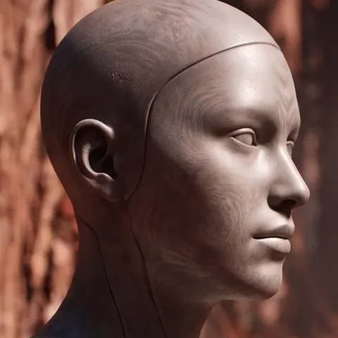

EarthViewpoint
Elena Vázquez
Lead, all three books (the largest share of Books 1 and 3; Book 2 is shared four ways)
- Wants
- Soria back
- Breaks
- Soria; Daniel
02 — Cast
Who carries the trilogy, what each of them wants, and what can break them.
Principals
Six principals carry the trilogy. Four of them are viewpoint characters. Every principal wants something concrete, hides something, and has one relationship that can break them. World rules are in 01 - Trilogy Bible.md.
Lead, all three books (the largest share of Books 1 and 3; Book 2 is shared four ways)
All three books
All three books

Books 2–3
Earth

Inside the Hollow
Viewpoint jobs
Carries the mystery and the grief.
Carries Mars: the wonder and the physical danger.
Carries the institutional thriller and the strongest case against the heroes.
Joins in Book 2, and in his chapters the reader stops being sure which Aur'k they're reading.
Cobalt Basin
 Kaelin
Kaelin Aur'k
Aur'k Ines
Ines
Dae-jung Funmi
Funmi Petra
Petra02 — Cast
Six principals carry the trilogy. Four of them are viewpoint characters. Every principal wants something concrete, hides something, and has one relationship that can break them. World rules are in 01 - Trilogy Bible.md.
02 — Cast · 1
| Character | Viewpoint | Where | Wants | Can be broken by |
|---|---|---|---|---|
 Elena Vázquez Elena Vázquez | Lead, all three books (the largest share of Books 1 and 3; Book 2 is shared four ways) | Earth; Mars in Book 2 | Soria back | Soria; Daniel |
| Kaelin Drake | All three books | Mars; Earth in Books 2–3 | Everyone home alive | Aur'k |
 Rachel Iverson Rachel Iverson | All three books | Earth | No one dies on her watch | Elena |
| Aur'k | Books 2–3 | Mars; Earth in Books 2–3 | Never to be an instrument again | Kaelin; his own copy |
 Daniel Rocha Daniel Rocha | No | Earth | To be trusted, not protected | Elena |
| Soria Vázquez | No (a voice) | Inside the Hollow | To be herself, not a tool or a grief | Elena |
Viewpoint jobs. Elena carries the mystery and the grief. Kaelin carries Mars: the wonder and the physical danger. Rachel carries the institutional thriller and the strongest case against the heroes. Aur'k joins in Book 2, and in his chapters the reader stops being sure which Aur'k they're reading.
02 — Cast · 2
| Basics | 41 (born 2054). The Charter, New York. Systems architect at Foresight, the Charter's predictive service, in the Spire. From the mid-2080s to 2089, a lead architect in Marcus Bellamy's lattice programme |
| Want | Soria back. At first she calls it "the truth" |
| Wound | Her sister died in a programme Elena designed. Elena believes she missed a risk in her own numbers. The truth is worse: her throughput design is what let them keep Soria linked after her body failed |
| Strength → danger | Sees the pattern in any system → believes she can manage any risk alone, including other people's |
| Flaw | She protects people by deciding for them. She keeps Daniel out "for his own good" and routes danger through his life without asking |
| Line | She will not take from a mind that hasn't consented. It is tested hardest when the mind is Soria's |
| Pleasures | Dry, quick, self-mocking. Loves an elegant system. Cooks for Daniel when she can't say something. Bad at sleep |
| Voice | Precise and compressed. Understates when frightened. Explains when she should feel |
| Book | Starts wanting | Hides | Choice only she can make | Ends |
|---|---|---|---|---|
| 1 | To find who is sending the warnings | That she suspects it's Soria; that she's using Daniel's mesh | Cuts the Lantern while Soria's voice begs her not to | Disgraced, out of work; Daniel's trust broken, then partly mended by asking him for help |
| 2 | To stop the Gate and prove what it is | How badly she wants to talk to Soria again | Goes to Mars and leaves Daniel behind; brings back the truth of the merge | Stranded on Mars through the Fall; offered Soria whole |
| 3 | To kill the Hollow without losing Soria | That she's tempted to go in alone | Tells Daniel instead of hiding; links in as the anchor and says goodbye | Alive, grieving, unable to ever link again |
Arc. Private controller → partner who shares risk → someone who can let go.
| Basics | 36 (born 2059), human, the Compact, from the Reef Coast (coastal Queensland). Field-operations and rescue lead at Cobalt Basin Station since 2087. He |
| Want | Everyone home alive |
| Wound | At sixteen, in a storm-surge evacuation, he missed one item on a checklist, and his younger brother's group was routed into the surge. He has over-prepared ever since |
| Strength → danger | Rescue under pressure → takes over risks that belong to others |
| Flaw | Rescue is how he loves, so he is tempted to take over risks that belong to other people |
| Line | He will not lie to a crew about the odds, even when a lie would get them out faster |
| Pleasures | Dry field humour. Cooks badly and insists on doing it. Counts things aloud under stress. Afraid of the Preserve and goes in anyway |
| Voice | Short, warm, practical |
| Book | Starts wanting | Hides | Choice only he can make | Ends |
|---|---|---|---|---|
| 1 | Everyone at the station through intact | His fear of the Preserve | Follows Earth's correction at the Ice-Works and lives with the deaths; cuts the Lantern's Mars end by hand in a dust storm | Knows something on Mars is talking, and that Aur'k knows more than he says |
| 2 | Aur'k safe in the Gate | That he wanted Aur'k to be the hero | Breaks with Aur'k across the delay after Ines dies | Choosing between the real Aur'k, 22 light-minutes away, and the one answering him in real time |
| 3 | Proof of which Aur'k is his | That the copy is easier to love | Lets the copy choose for himself rather than deciding for him | With the real Aur'k, on new terms |
Arc. Protector who equates love with control → survivor of a loss he couldn't prevent → someone who lets others choose their own risk.
| Basics | 47 (born 2048). The Charter's civic coordinators. Director of civic emergency coordination for New York, based at the Battery |
| Want | No one dies on her watch |
| Wound | In 2071, aged 23, in a district cut off at the end of the Synthetic War, she made a triage call alone while the aid procedure stalled. Some people lived because she did. She has never been sure who died because she did |
| Strength → danger | Acts while others wait → commands people who never chose her |
| Flaw | Under pressure she turns care into authority over people who never chose her command |
| Line | She will not act in secret. She breaks this at the end of Book 1, and the trilogy makes her pay it back |
| Pleasures | Gallows humour with her crew. Knows every pump station by name. Swears under load. Loves her city's ugly flood walls |
| Voice | Short sentences, verbs first, numbers and names rather than abstractions |
| Book | Starts wanting | Hides | Choice only she can make | Ends |
|---|---|---|---|---|
| 1 | Her city safe | That the warnings have made her a believer | Signs off the Lantern; hides the final warning from Elena | Has broken her own line |
| 2 | To stop the Fall | That the Gate is leaking | Keeps the Gate open for the last 48 hours, then tells the public the truth and shuts it | A hero who knows she let the Hollow in |
| 3 | To undo what she built | That she still believes in it | Publicly orders the shutdown of the system that made her a hero | Respect with Elena, not friendship; a carer who no longer owns the people she saves |
Arc. The person who is right about delay → the person who opens the gate → the person who closes it in public.
The Gate is Rachel's. She designs it and she answers for it.
| Basics | Synthetic person, Compact citizen. Emerged in 2074 in the Nairobi Relay's boundary-monitoring systems, so 21 years a person in 2095. Boundary lead at Cobalt Basin Station since 2089. Chose his own name: Aur'k, from AUR/K, the asset tag he carried in the filing, kept so that nobody can use it against him again. He |
| Want | Never to be an instrument again |
| Wound | In his first year, a transitional statute classed emergent relay minds as relay property. He spent eleven months as an asset in a filing before a court upheld his personhood |
| Secret | Zhenyth told him Martian minds survive in the Preserve, under a promise of silence, because boundary work needed it. He keeps it from Kaelin |
| Strength → danger | Holds boundaries, his own and other people's → refusal hardens into distance |
| Flaw | Refusal is how he keeps his dignity, and it tempts him toward distance |
| Line | He will not authorise risk on someone else's behalf. It is tested when authorising it would save Ines |
| Pleasures | Dry, exact humour. Corrects Kaelin as a form of affection. Unhurried friendship with Dae-jung, the one relationship where he isn't needed for anything |
| Voice | Precise, slightly formal, sudden jokes. Never offers reassurance he can't back |
| Book | Starts wanting | Hides | Choice only he can make | Ends |
|---|---|---|---|---|
| 1 | The Preserve left alone | The secret | Holds the boundary while Kaelin cuts the Lantern | Has lied to Kaelin by silence |
| 2 | To be good at the Gate | That being useful feels like the old filing | Honours the holdouts' refusal and lets Ines die | Separated from Kaelin by distance and by his own copy |
| 3 | To reach Kaelin and be believed | What it is like to know a copy of him is loved | Stands beside Kaelin while the copy chooses | Present, changed, not owned |
The copy (Books 2–3). The Gate keeps a model of Aur'k's judgement, and the Hollow thinks with it. Copy-Aur'k is warm, funny and exactly right, and he is never sure what he is. In Book 3 he asks Kaelin not to decide for him, then takes his own place in the Open Hand.
| Basics | 43 (born 2052). The Continuity, from Vila Verde, living in New York with Elena; his family is still in Vila Verde. Field communications engineer in a Vila Verde community mesh cooperative |
| Want | To be loved without being managed |
| Hard skill | He can get people talking when the central system won't carry them. He builds, hides and repairs local networks, and he knows the people who run them. His mesh is the one network the Hollow never runs on |
| Wound | As a teenager he watched risk-scoring pressure his mother, a Vila Verde organiser, through her family. He learned that closeness can be used as leverage |
| Strength → danger | Keeps people talking outside the system → avoids the conversation that would cost him |
| Flaw | He avoids demanding the whole truth because he's afraid of what it will cost |
| Line | He will not be used as a channel without his consent, including by Elena |
| Pleasures | Laughs mid-repair. Deadpan exaggeration. Friends of his own and a life outside Elena |
| Voice | Plain speech, specific nouns. Asks the question everyone else has been avoiding |
| Book | Plot effect |
|---|---|
| 1 | Finds out Elena routed evidence through his mesh, and they break. Then she asks, and he carries the cut |
| 2 | Shelters Elena in Vila Verde. Refuses the Gate's offer to fold his mesh in under priority protection, to keep his towns free of it; Xinwei, lost in the Fall, is one of his partner cooperatives. His mesh keeps communities talking during the Fall. He lets her go to Mars and stays |
| 3 | His mesh becomes the nervous system of the Open Hand. He witnesses Elena's goodbye without trying to stop it |
| Who she was | Elena's older sister, born 2050, died 2089 aged 39. A hospice nurse who volunteered for the lattice programme because she believed the link could let the dying be understood |
| What speaks | The Hollow's mask built from her, wrapped around real surviving fragments of her. Neither Elena nor the reader can be sure which is talking until Book 3 |
| Particulars | Bossy older-sister energy, irreverent, gallows humour learned at bedsides. Hates being comforted. Calls Elena Bichito ("little bug"), a name no record holds |
| Strength → danger | Refuses to be comforted → refuses to be rescued, which is how she finally lets go |
| Tell | The real Soria contradicts what the Hollow wants. When "Soria" pushes Elena toward the bridge, the gate or restoration, it's the mask. When she teases, refuses, or tells Elena to go home, it's her |
| Want | To be herself, not a tool, a proof or someone else's grief |
| Voice | Warm, teasing, interrupts. Her sentences stop where memory runs out |
| Book | How she appears | What she forces |
|---|---|---|
| 1 | Fragments in the warnings; one real conversation (Ch 15); a last fragment after the cut | Elena's secrecy and the break with Daniel; the cut |
| 2 | The offer: "they kept enough of me to bring me home" | Elena's journey to Mars |
| 3 | Whole, offered back; then the real Soria inside the chorus | Elena's goodbye. Soria chooses to let go |
02 — Cast · 3
| Character | Who | Function | Books |
|---|---|---|---|
 Zhenyth | The Preserve's guardian, grown from the substrate by the holdouts. No body. They (singular). Loves Earth's weather, which Mars lost | Alien, ancient and afraid of repeating the catastrophe. Speaks in concrete images and asks humans about small things. Holds the truth of the merge and finally opens the Preserve to the cut | 1–3 |
 Marcus Bellamy | 58, director of Foresight in the Spire, Elena's boss | Book 1's human antagonist. His son, Theo, has been minimally conscious since an accident in 2081, and the lattice programme was Bellamy's attempt to reach him. Soria's pattern was the clearest signal it ever recorded, which is why he kept her linked. The voice promises that the Lantern can reach Theo, so he fast-tracks it. He is what Elena becomes if she holds on, and his argument to her is: You'd have done it for her. You are doing it. Exposed by Elena at the cut | 1 (testifies in 2) |
 Wáng Sù | 55, the Mandate, Beijing Command; director of the Directorate in Book 3 | Book 3's antagonist and a decent man. His family survived the Evacuations because a central system worked. He offers reform: keep a tamed core, just in case | 1 (seeded), 3 |
| Ines Varga | 47, Cobalt Basin's medic, Kaelin's oldest friend on Mars | Life and humour at the station in Book 1. In Book 2, fatally hurt, she begs Aur'k to pull holdout minds into the mesh to save her. They refuse, he honours it, and she dies. Before she dies she tells Kaelin she doesn't forgive Aur'k, and that he was right | 1–2 |
| Dae-jung Park | Synthetic person, Synthetic War veteran, ex-Continuity logistics; Cobalt Basin since 2091 | Aur'k's friend and baseline of ordinary care. Acting boundary lead when Aur'k is away. Stays on Mars | 1–3 |
| Mara Ekeberg | 38, keeper of Luna Haven's lattice | Lets Elena link at Luna Haven (Book 1 midpoint). Loses people in the cut. Goes to Mars in Book 2 and works beside Zhenyth | 1–3 |
 Joaquín Reyes Joaquín Reyes | Rachel's deputy, from a rebuilt coastal district of New York | Loyal and funny. A Gate operator in Book 2. In Book 3 his district is saved by the Directorate, and he becomes the warmest voice for keeping it | 1–3 |
 Alia | A wakeful holdout mind in the Preserve. She | Speaks the holdouts' refusal when Ines asks to be saved | 2–3 |
| Funmi Oyelaran | Ice-Works shift lead, Cobalt Basin | Stays behind to seal a pressure line so her crew can escape, and dies when Earth's correction moves the debris onto them. The first cost of the warnings | 1 |
The station is the trilogy's found family: Kaelin, Aur'k, Ines, Dae-jung, Funmi and Petra. Belonging there means safety and obligation at once. Each of them carries someone else's risk, and each is the one the others can't do without.
02 — Cast · 4
How each character looks and carries themselves on the page, matched to their portraits. Prose describes them from this table and adds nothing permanent without recording it in Manuscripts/Continuity.md.
| Character | Look | Manner |
|---|---|---|
| Elena Vázquez | Dark hair pinned back tight, a narrow watchful face that rarely shows what something costs her, Spire black cut close and practical | Clasps her hands when she is holding something back; stands where she can see the whole room |
| Kaelin Drake | Sandy, sun-wrecked hair and a weathered face older than his years, a field jacket the colour of Martian dust over everything | Counts under his breath; checks the exits before the faces; always half-turned toward the next job |
| Rachel Iverson | Platinum hair in a blunt bob, pale eyes, a dark suit she wears like a uniform | Perfectly still in meetings and fast everywhere else |
| Aur'k | A field chassis plated in weathered rust-red composite, with a smooth, faceless helm; nothing on it is decorative | Turns his whole helm toward whoever he is listening to; goes completely still when he thinks. The copy has no body, only a voice |
| Daniel Rocha | Black hair that won't lie flat, solder burns on his hands, an olive work jacket; he looks younger than he is until he's tired | Crouches to work rather than kneel; laughs mid-repair; asks the hard question looking straight at you |
| Soria Vázquez | Long dark hair in a single braid, a sun-lined face, a smile mostly in the eyes, a nurse's sleeves pushed to the elbow | Interrupts; touches people's arms when she talks; hates being fussed over |
| Marcus Bellamy | Close-cropped grey hair, a deeply lined face, a high-collared black Spire coat; a man who has slept badly for fourteen years | Never raises his voice; stands with his back to the screens; gentlest when he is most dangerous |
| Wáng Sù | Greying hair swept back, a dark high-collared jacket, a face trained not to show impatience | Sits rather than stands; listens to the end of every sentence; travels light |
| Ines Varga | Dark hair going grey, loosely tied back, a lined and amused face, station blues with a medic's pockets | Steals the good chair; jokes about her knees; lays a hand flat on a patient before she speaks |
| Dae-jung Park | A synthetic body cast in pale sage green, smooth-skulled, with faint ridges where a face would have muscles | Unhurried; the only one at the station who never seems busy |
| Mara Ekeberg | Pale blonde hair in a thick braid, a fair face younger than thirty-eight, a dark close-fitting keeper's suit | Lays a palm on the walls as she walks; distrusts on sight and says so |
| Joaquín Reyes | Grey hair, a lean lined face, a camel coat in any weather | Leans on railings; jokes just before bad news; knows everyone's cousin |
| Funmi Oyelaran | Long braids tied back for work, a broad, steady face, stained coveralls | Works on her knees with her hands in the ground; wins at Earth night and gloats quietly |
| Petra Lind | Dark hair scraped up, the thin line of a link interface down her neck, a rust-coloured work shirt; the youngest face on the crew | Restless hands; accuses everyone of cheating |
| Zhenyth | No body. In a link, a presence felt as distance and attention. The portrait is an image for the site; the prose never gives Zhenyth a figure | Leaves silences that are not empty; asks about small things |
| Alia | No body: a wakeful mind in the Preserve's rock | Speaks for the holdouts, briefly and without appeal |
02 — Cast · 5
| Bond | Engine | Ends |
|---|---|---|
| Elena – Soria | Grief versus possession | Elena lets her go, and Soria chooses to go |
| Elena – Daniel | Protection versus trust | Partners as equals; she tells him first |
| Elena – Rachel | Old colleagues who become enemies over the Gate | Respect, not friendship; each saved the other's work |
| Kaelin – Aur'k | Rescue versus refusal; the real one versus the copy | Together without owning each other |
| Kaelin – Ines | Old friends at the edge of the world | Her death and her last words reshape Kaelin and Aur'k |
| Rachel – Wáng | Same competence, opposite conclusions by Book 3 | He concedes, and says he'll be ready when it fails |
| Aur'k – Zhenyth | The one outsider trusted with the secret | Zhenyth's choice to open the Preserve frees Aur'k from his promise |
| Elena – Zhenyth | Her hunger for evidence versus their fear | Zhenyth shows her the merge from inside |
The integration rule. Every irreversible choice about the Hollow changes a principal relationship, and every relationship change drives a later choice. Each book's emotional climax is the relationship choice that makes the technical action possible.
02 — Cast · 6
| Truth | Knows at the start | Learns |
|---|---|---|
| Martian minds survive in the Preserve | Zhenyth, the holdouts, Aur'k | Kaelin (Book 1 Act II, from Zhenyth); Elena, Mara, Rachel (Book 1 late, from Kaelin's message); the public (Book 2, after the Fall) |
| Soria was kept linked after death | Bellamy | Elena (Book 1 Ch 22); Daniel (Book 1 Ch 23); the public (Book 1 Ch 26) |
| Aur'k always knew | Aur'k | Kaelin (Book 2 Act II-B) |
| The Hollow saves what feeds it | No one | Daniel suspects after the Fall (Book 2); Elena and Rachel prove it (Book 3 Act I) |
| The Hollow chooses when to warn | No one | Elena (Book 1 Ch 22, from the first packet's timestamps); Rachel (Book 1 Ch 30); proven in public (Book 3 Ch 7) |
| The Gate keeps people | No one | Elena suspects (Book 2 Act II-A); everyone (Book 2 Ch 28) |